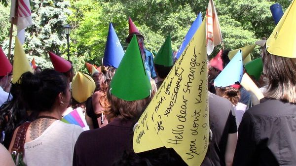

Jul 09, 2026 06:42 AM | NEW YORK
“We will free the iPad babies,” went one chant at the Summer of Ludd. “No Gemini, no GPT, no Grok, no Claude,” went another. The festival for big-tech sceptics, held in New York from June 28th to July 5th, stayed mostly true to its principles. Phones were banned. The event had no social-media presence. Organisers relied on posters and word of mouth to publicise the festival. Perhaps as a result, the crowds were small. Yet those who came, most of them in their 20s, reflect an ambivalence about technology that is increasingly common among Generation Z.
Members of this cohort are the first to have grown up entirely in the age of the smartphone. Now many are reflecting on what it has cost them. In 2024 nearly a quarter of Gen Z-ers told Harris, a pollster, that they wished smartphones had never been invented. More recent polling by Pew found that over half support banning under-16s from social media. Many are trying to reduce their own screen time, deleting apps or setting limits. Others, like the self-described Luddites in Manhattan, go further. At one point during the festival, devices were “executed” after standing trial.
The original Luddites were 19th-century textile workers who resented the mechanisation of their industry. They were not opposed to all technology, but feared for their livelihoods. Today’s young Luddites do not shun the digital world entirely, but object to tracking tools, invasive algorithms and devices’ effect on their social lives. Artificial intelligence has added another fear: 70% of Gen Z think AI will have a negative impact on jobs, according to Marist.

Some Gen Z-ers are trying to lead more analogue lives, swapping screen time for offline pursuits. Sales of flip phones and cassette tapes have risen. New “Luddite clubs” encourage people to give up their smartphones and social media, at least for a while. Ironically, going offline is being popularised online. Influencers post about gardening and puzzles as antidotes to doomscrolling, reframing tactile activities as a “luxury” lifestyle. A video on TikTok, encouraging a switch to an old iPod, has 3m views. (One commenter asks how the device works without streaming.) Pinterest, a social network, is courting users by promising “it’s about life, not likes”.
Even the Summer of Ludd is not entirely free from the tensions of the modern world. One attendee admits she was her group’s “designated smartphone user”, helping everyone else navigate the city. Still, the Luddites believe in their cause. Since giving up his smartphone three years ago, Nick Plante, 25, reports milestones such as being able to finish a book again. “This is the best I’ve felt, probably ever in my life.” ■
Stay on top of American politics with The US in brief, our daily newsletter with fast analysis of the most important political news, and Checks and Balance, a weekly note that examines the state of American democracy and the issues that matter to voters.